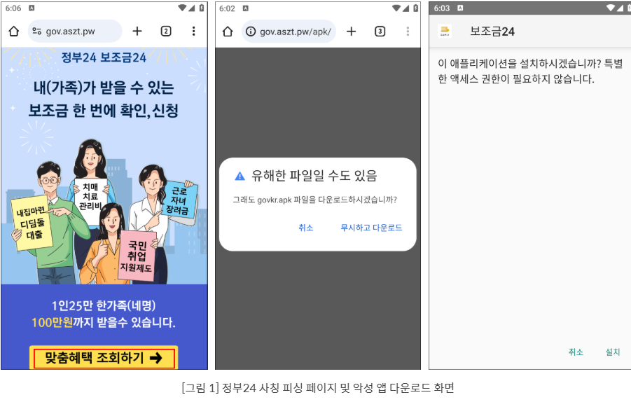
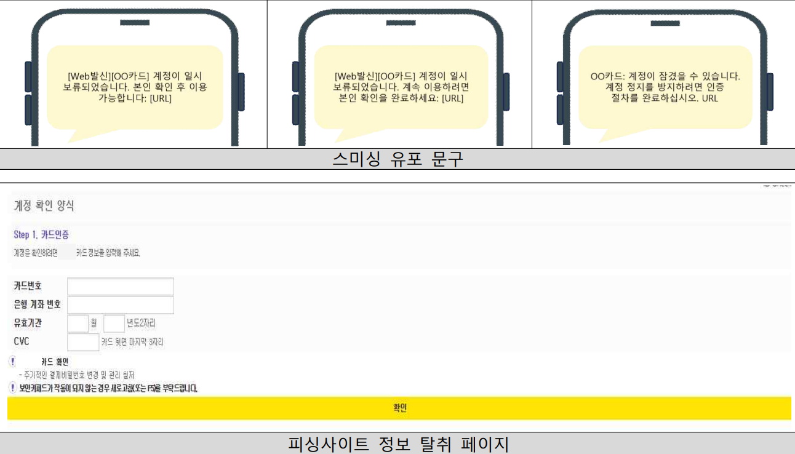
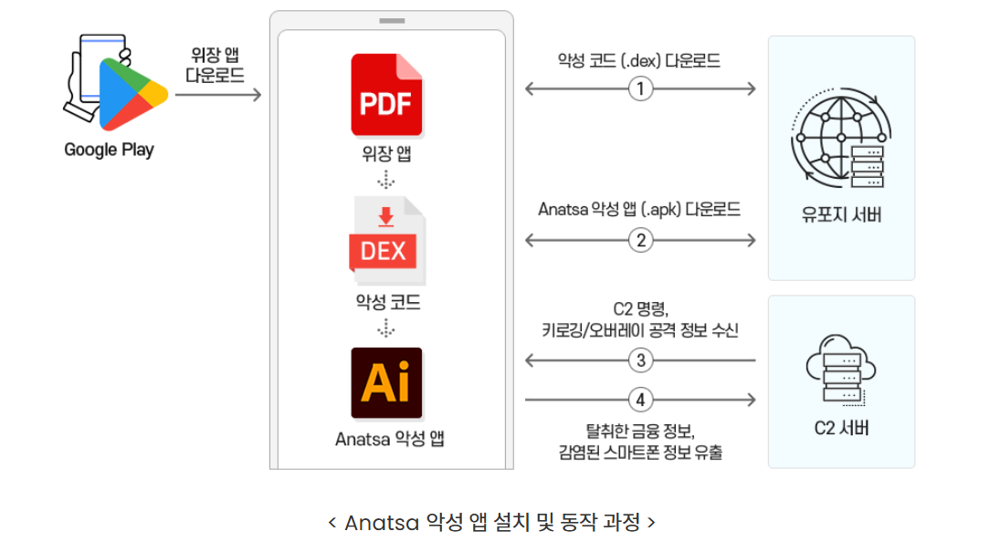
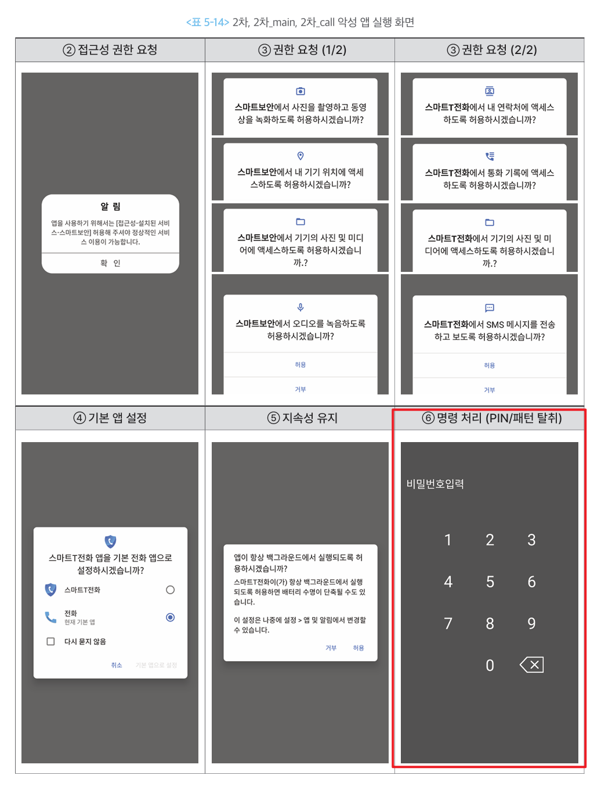

금융·인증정보 탈취형
1. 개요
이 유형은 금융계정에 접근하거나 거래를 승인하는 데 필요한 정보를 빼내는 악성 앱이다.
개인·단말정보 탈취형이 피해자가 누구인지 파악하는 단계라면, 이 유형은 그 정보로 실제 돈을 움직이기 직전 단계다. 탈취한 정보로 금융 앱에 로그인하고, 본인인증을 통과하고, 계좌이체나 결제를 시도한다. 이 유형에서 정보가 넘어가면 금융 피해까지 남은 거리가 매우 짧다.
가져가는 것은 크게 둘이다.
- 금융정보 — 계좌번호·카드번호·금융 앱 계정처럼 돈에 직접 닿는 정보
- 인증정보 — PIN·패턴·문자 인증번호처럼 "본인이 맞다"를 증명하는 수단
1-1. 무엇을 탈취하는가
| 구분 | 대표 정보 | 공격자의 활용 |
|---|---|---|
| 금융정보 | 계좌번호, 카드번호, 유효기간, CVC, 금융 앱 계정정보 | 계정 접근, 부정결제 |
| 단말 인증정보 | 화면 잠금 PIN·패턴 | 단말 잠금 해제, 원격 조작 보조 |
| 2차 인증정보 | 문자 인증번호, OTP | 본인인증 및 거래 승인 우회 |
| 금융거래 화면 | 로그인·인증·이체 화면 | 입력값 확인, 거래 진행 상황 감시 |
1-2. 다른 유형과 헷갈리는 지점
문자를 가져간다는 점은 개인·단말정보 탈취형과 겹친다. 무엇을 노리고 가져가느냐로 구분한다.
flowchart TD
A{"문자를 왜 가져가는가?"}
A -- "대화 내용 · 지인 관계 파악" --> B["개인·단말정보 탈취형"]
A -- "인증번호 확보 ·<br/>본인인증 우회" --> C["금융·인증정보 탈취형"]실제 악성 앱은 두 목적을 함께 갖는 경우가 많다. 앱 하나가 문자를 통째로 가져가면 두 유형에 모두 해당한다고 보는 편이 안전하다.
2. 국내 확인 사례
| 시기 | 사례 | 확인된 탈취 정보 |
|---|---|---|
| 2024.07 | 해외 금융을 노리는 악성 앱, 한국에 상륙하다 (Anatsa) | 오버레이·키로깅으로 금융 앱 로그인정보, 스크린샷·문자·인증코드 |
| 2025.08 | 지원금 사칭 스미싱 앱 | 수신 문자 본문·발신번호·수신시각, 단말정보 |
| 2026.07 | 카드사 사칭 스미싱·피싱 | 카드번호, 계좌번호, 유효기간, CVC |
2-1. 지원금 사칭 스미싱 앱 (이스트시큐리티, 2025.08)
국민지원금 신청대상자에 해당되므로 온라인센터에서 신청하시기 바랍니다라는 문자로 시작해, 정부24를 사칭한 가짜 사이트로 연결하고 악성 앱을 내려받게 한다.
이 앱의 핵심은 문자 가로채기다. 단순히 읽어가는 것이 아니라 다른 앱이 그 문자를 받지 못하도록 수신을 중간에서 끊는다. 가져간 것은 문자 본문·발신번호·수신시각이며 단말 식별값과 함께 서버로 넘어간다.
분석 자료는 이 기능이 금융 계정 접근과 2차 인증 우회에 그대로 쓰일 수 있다고 지적한다. 여기에 더해 감염 단말이 약 0.2초 간격으로 스미싱 문자를 자동 대량 발송하는 기능도 확인됐다.

설치 화면에 뜬 문구가 눈에 띈다. "특별한 액세스 권한이 필요하지 않습니다." 실제로는 설치 직후부터 문자 수신·발송 권한을 요구한다. 설치 단계에서 권한을 숨기고 실행한 뒤에 요구하는 방식이다.
2-2. 카드사 사칭 스미싱·피싱 (KISA, 2026.07)
OO카드 · 본인 확인 · 계정 정지 같은 키워드를 쓴 문자로 시작한다. 계정 일시 보류, 인증 절차 같은 문구로 링크를 누르게 하고, 연결된 피싱사이트가 계정 인증 단계라며 카드번호·계좌번호·유효기간·CVC를 입력받는다.
악성 앱을 설치하지 않아도 성립한다는 점이 중요하다. 피해자가 직접 입력하므로 단말에는 아무 흔적도 남지 않는다.

피싱사이트가 계정 확인 양식 · Step 1. 카드인증처럼 절차가 진행되는 것처럼 보이는 화면을 쓴다는 점도 눈여겨볼 만하다. 주기적인 결제비밀번호 변경 및 관리 철저 같은 안내 문구까지 넣어 실제 카드사 화면처럼 꾸몄다.
3. 핵심 기능
정보를 가져가는 방식은 세 가지로 나뉜다. 세 가지를 같은 항목으로 정리했다.
3-1. 가짜 입력 화면
형태가 두 가지다. 앱 없이 웹페이지만으로 하는 것과, 앱을 설치해 진짜 금융 앱 위에 덮어씌우는 것이다.
- 동작 방식 ① 피싱 웹페이지
- 문자 링크로 금융회사·카드사 홈페이지처럼 꾸민 웹페이지에 접속시킨다.
- 본인 확인·계정 인증을 이유로 카드번호·계좌번호를 적어 넣게 한다.
- 악성 앱을 설치하지 않는다. 2026년 7월 카드사 사칭 사례가 여기에 해당한다.
- 동작 방식 ② 오버레이
- 악성 앱을 설치한 경우에 쓴다.
- 피해자가 진짜 금융 앱을 실행한 그 순간, 악성 앱이 그 위에 똑같이 생긴 가짜 입력창을 덮어씌운다.
- 피해자는 방금 자기가 켠 정상 앱에 입력한다고 믿지만, 입력값은 위에 덮인 가짜 창으로 들어간다.
- 왜 통하는가
- 피싱 웹페이지는 앱이 설치되지 않으므로 백신 검사 대상 자체가 없다. 피해자가 직접 입력하니 권한 요청도 없다.
- 오버레이는 피해자가 실제로 정상 앱을 실행한 것이 맞다. 앱을 켠 기록도, 화면을 본 것도 전부 정상이라 단말 기록만 봐서는 이상한 점이 없다.
- 한계와 조건
- 오버레이를 쓰려면 "다른 앱 위에 표시" 권한이 필요하고, 이 권한은 사용자가 직접 켜야 한다.
- 마켓을 거치지 않고 설치된 앱은 이 권한을 앱 안에서 유도해 켤 수 없다. 설정 앱의 해당 앱 정보 화면까지 사용자가 직접 들어가야 한다(안드로이드 15 기준. 안드로이드 13에서는 접근성·알림 접근에만 적용됐다).
- 금융 앱이 화면이 가려진 상태의 터치를 무시하도록 만들어 두면 오버레이 입력이 통하지 않는다.
- 피싱 웹페이지만으로는 문자 인증번호까지 얻지 못한다. 그래서 아래 3-2와 함께 쓰인다.
여기서 짚어둘 점이 있다. KISA는 문자에 있는 주소를 누른 것만으로는 악성 앱에 감염되지 않는다고 안내한다. 링크를 누르는 것과 앱을 설치하는 것은 다른 사건이다. 탐지 관점에서도 링크 접속 기록만으로는 감염을 판단할 수 없고, 설치가 일어났는지가 분기점이 된다.
3-2. 문자 인증번호 가로채기
- 동작 방식
- 문자 수신 권한을 얻어 들어오는 문자를 읽고, 본문·발신번호·수신시각을 서버로 보낸다.
- 여기서 더 나아가 다른 앱이 그 문자를 받지 못하도록 수신을 중간에서 끊기도 한다.
- 악성 앱을 기본 문자 앱으로 설정하도록 유도하는 경우도 있다. 기본 문자 앱이 되면 문자에 대한 제약이 크게 줄어든다.
- 왜 통하는가
- 피해자가 인증번호를 보지 못하면 이상을 눈치채기 어렵다. 문자가 안 오면 통신 문제라고 여긴다.
- 문자 인증은 국내 금융거래의 본인확인 수단으로 널리 쓰인다. 이 하나가 뚫리면 비대면 계좌개설·대출·소액결제까지 이어진다.
- 문자 권한은 메신저나 전화 앱도 정상적으로 요구하는 권한이라 의심받지 않는다.
- 한계와 조건
- 안드로이드는 문자를 읽는 것과 문자함을 고치는 것을 다르게 취급한다. 문자 수신 권한만 있으면 들어오는 문자를 볼 수는 있어도, 문자함에서 문자를 지우거나 숨기지는 못한다. 그건 기본 문자 앱만 할 수 있다.
- 그래서 공격자는 악성 앱을 기본 문자 앱으로 바꾸게 유도한다. 기본 문자 앱이 되면 인증번호 문자를 받는 즉시 지워, 피해자가 나중에 문자함을 뒤져봐도 아무것도 찾지 못하게 만들 수 있다.
- 문자를 쓰지 않는 인증에는 통하지 않는다. 금융 앱이 자체 생성하는 OTP, 앱 푸시 승인, 생체인증은 문자 가로채기로 넘을 수 없다.
- 통신이 차단되면 가로챈 문자를 서버로 보내지 못한다.
3-3. 잠금 인증정보와 금융거래 화면 탈취
- 동작 방식
- 가짜 잠금화면을 띄워 화면 잠금 PIN이나 패턴을 입력받는다.
- 접근성 권한으로 화면에 표시되는 내용과 입력값을 읽는다.
- 화면을 녹화해 서버로 보낸다. 인증 과정과 금융거래 화면을 그대로 볼 수 있다.
- 왜 통하는가
- 잠금화면은 하루에도 수십 번 보는 화면이라 의심 없이 입력한다.
- 접근성 권한은 원래 화면을 읽고 대신 조작하라고 만든 기능이다. 악용해도 동작 자체는 정상 범위다.
- 화면 녹화는 입력값을 직접 훔치지 않고도 인증 과정 전체를 볼 수 있게 해준다.
- 한계와 조건
- 접근성 권한은 사용자가 설정에서 직접 켜야 하고, 안드로이드 13부터 마켓을 거치지 않은 앱은 앱 안에서 유도해 켤 수 없다.
- 금융 앱이 화면 보호를 켜 두면 캡처·녹화 결과가 빈 화면으로 남는다.
- 최신 안드로이드는 정식 접근성 도구가 아닌 앱이 민감한 화면 내용을 읽지 못하도록 막는 수단을 제공한다.
- 가짜 잠금화면으로 얻은 값은 어디까지나 입력받은 값이다. 실제 단말 잠금을 푸는 데는 별도 조작이 필요하다.
4. 전체 공격 흐름
flowchart TD
A["금융회사·카드사·<br/>정부지원금 사칭"] --> B["악성 앱 설치 또는<br/>피싱 화면 접속"]
B --> C["금융정보를 직접<br/>입력하도록 유도"]
C --> D["문자 · 접근성 ·<br/>화면 권한 확보"]
D --> E["인증번호 · PIN·패턴 ·<br/>금융거래 화면 탈취"]
E --> F["C2 서버로 전송"]
F --> G["금융계정 접근 및<br/>본인인증 우회"]
G --> H["부정이체 · 결제 등<br/>금융 피해로 연결"]앞선 두 유형과 결정적으로 다른 점이 있다. 여기서부터는 공격자가 피해자를 흉내 낼 수 있다. 계정과 인증수단을 모두 쥐게 되므로, 금융회사 입장에서는 정상 이용자의 거래와 구분하기 어려워진다.
5. 실제 사례에서 확인된 구조
5-1. Anatsa — 정식 마켓을 통과한 오버레이·키로깅
2024년 7월 금융보안원은 해외 뱅킹 악성코드 Anatsa가 국내 금융을 대상으로 공격 범위를 넓힌 것을 확인했다. 국내 유입이 공식 확인된 사례라는 점에서 의미가 크다.

| 항목 | 내용 |
|---|---|
| 유포 경로 | PDF 리더·QR코드 스캐너 등으로 위장해 구글 플레이를 통해 배포 |
| 설치 방식 | 마켓에 올라간 위장 앱이 앱 업데이트를 가장해 본체를 내려받아 설치 |
| 탈취 방식 | 키로깅으로 입력값을 가로채고, 오버레이로 가짜 뱅킹 로그인 화면을 띄움 |
| 탈취 대상 | 스크린샷, 문자, 인증코드 |
| 단말 제어 | 화면잠금 해제, 화면 터치, 값 입력 |
| 방해 기능 | 모바일 백신·클리너 실행 방해, 앱 삭제 차단 |
| 규모 | 2024년 6월 기준 한국 포함 54개국 688개 금융·핀테크·가상화폐 앱이 대상 |
여기서 두 가지를 짚어둘 만하다.
하나. 정식 마켓 심사를 통과했다. 설치 시점에는 악성 기능이 없는 껍데기 앱이었기 때문이다. 이 구조 자체는 로더·드로퍼·다운로더형에서 다룬 것과 같다.
둘. 백신 실행을 방해하고 삭제를 막는다. 감염을 발견해도 정리가 쉽지 않다는 뜻이다.
5-2. 지원금 사칭 앱 — 문자 인증번호 가로채기
2025년 8월 확인된 정부24 사칭 앱은 문자 가로채기에 집중한 형태였다.
| 단계 | 동작 |
|---|---|
| 유인 | 지원금 신청 안내 문자로 가짜 정부24 사이트 접속 유도 |
| 설치 | "맞춤 혜택 조회하기" 버튼을 누르면 악성 앱 내려받기 |
| 권한 | 문자 수신·발송, 전화번호 조회, 배터리 최적화 제외 |
| 가로채기 | 문자 수신을 중간에서 끊어 다른 앱에 전달되지 않게 차단 |
| 전송 | 문자 본문·발신번호·수신시각을 단말 식별값과 함께 서버로 전송 |
| 재확산 | 약 0.2초 간격으로 스미싱 문자 자동 대량 발송 |
설치 시점에는 특별한 권한을 요구하지 않다가 실행한 뒤에 권한을 요구하는 점도 확인됐다. 설치 직후 검사에서는 별다른 신호가 나오지 않는다는 뜻이다.
5-3. BlackEcho — 가짜 잠금화면과 화면 녹화
Operation BlackEcho의 2차 악성 앱은 공격자 명령을 받으면 범죄조직이 만든 잠금화면을 띄워 PIN 또는 패턴을 입력받았다. 입력된 값은 그대로 서버로 전송된다.
여기에 더해 화면을 기본 6분간 녹화해 전송하는 기능도 있었다. 피해자의 인증 과정과 금융거래 화면을 그대로 볼 수 있다는 뜻이다.

위 화면이 권한을 얻어내는 순서를 그대로 보여준다. 접근성 권한을 먼저 요구하고, 카메라·위치·사진·녹음·연락처·통화기록·문자 권한을 차례로 받아낸다. 이어서 기본 전화 앱으로 설정하게 하고 배터리 최적화에서 제외시켜 백그라운드에 계속 남는다. 이 준비가 끝난 뒤에야 마지막 단계로 가짜 비밀번호 입력 화면이 뜬다.
여기서 눈여겨볼 점이 있다. 요구하는 권한이 앱마다 다르다. 백신을 자처하는 쪽은 카메라·위치·오디오를, 전화 앱을 자처하는 쪽은 연락처·통화기록·문자를 요구한다. 각자 위장한 정체에 어울리는 권한만 요구해서 의심을 피한다.
화면 조작과 실시간 감시에 대한 상세는 원격제어·화면감시형 문서에서 다룬다.
5-4. 참고 · 해외에서 확인된 최신 형태
2026년 공개된 로카롤라(Rokarolla) 는 이 유형의 기능이 어디까지 모여 있는지 보여준다. 217개 금융·가상화폐 앱을 대상으로 하며, 특정 금융 앱을 모방한 가짜 로그인 화면과 가짜 잠금화면으로 로그인정보와 PIN·패턴을 함께 가져간다. 문자 전체를 읽고 발송할 수 있어 일회용 인증번호를 가로채 다중인증을 우회하며, 최초 배포 파일은 구글 플레이 프로텍트로 위장한 드로퍼였다.
6. 공격자가 이 정보를 탈취하는 이유
- 금융계정에 직접 로그인하기 위해서 — 계정정보만 있으면 피해자의 금융 앱에 그대로 들어갈 수 있다.
- 본인인증 절차를 우회하기 위해서 — 문자 인증번호나 PIN을 확보하면 "본인이 맞다"는 확인 단계를 그대로 통과한다.
- 단말 잠금을 풀고 금융 앱을 조작하기 위해서 — PIN·패턴이 넘어가면 피해자의 단말 자체를 열어 직접 조작할 수 있다.
- 이체·결제 승인에 필요한 정보를 확보하기 위해서 — 카드번호·유효기간·CVC가 모이면 결제 승인까지 완결된다.
- 피해자 명의로 새 금융거래를 만들기 위해서 — 문자 인증이 뚫리면 비대면 계좌개설·대출·소액결제 같은 신규 거래까지 가능해진다.
7. 탐지 관점 정리
7-1. 봐야 할 흔적
| 구분 | 주요 흔적 |
|---|---|
| 권한 조합 | 앱 기능과 무관한 문자 수신·발송 권한 · 다른 앱 위에 표시 권한 · 접근성 권한 요구 |
| 화면 | 금융 앱 실행 시점에 다른 앱의 창이 위에 겹쳐짐 · 화면 캡처나 녹화가 동작 중 |
| 문자 | 인증번호 문자가 도착하지 않음 · 사용자가 보내지 않은 문자 발송 |
| 통신 | 문자 수신 직후 발생하는 외부 전송 · 금융 앱 실행과 시점이 겹치는 통신 |
| 단말 상태 | 백신 앱이 실행되지 않거나 삭제가 막힘 |
권한을 요구한다는 사실 자체가 신호가 되기도 한다. 구글 플레이 정책은 접근성 도구로 인정되는 앱을 장애 사용자를 위한 서비스로 한정하고, 안티바이러스·자동화 도구·모니터링 앱은 여기에 해당하지 않는다고 명시한다. 또한 앱이 스스로 판단해 동작을 실행하도록 만드는 접근성 API 사용을 금지한다. 따라서 백신을 자처하는 앱이 접근성 권한을 요구한다면 그 요구 자체가 정책에 어긋난다.
정상 백신이라면 하지 않을 요구다.
7-2. 이 유형이 특히 까다로운 이유
| 어려운 점 | 내용 |
|---|---|
| 권한을 안 쓰는 경로가 있다 | 피싱 화면에 피해자가 직접 입력하는 정보는 권한 요청이 전혀 없어, 권한 기반 탐지에 걸리지 않는다. |
| 앱이 아예 없을 수도 있다 | 웹페이지만으로 카드정보를 받아내면 단말에 설치되는 것이 없다. 백신 검사 대상 자체가 없다. |
| 인증이 정상적으로 통과된다 | 가로챈 인증번호는 진짜다. 금융회사 입장에서는 본인확인이 정상 처리된 것으로 보인다. |
| 피해자가 이상을 못 느낀다 | 인증번호 문자가 안 오면 통신 문제로 여기고, 오버레이는 정상 앱 화면과 구분되지 않는다. |
7-3. 플랫폼에서 받을 수 있는 신호
안드로이드는 화면을 훔쳐보거나 조작하는 앱을 판별하는 신호를 앱에 제공한다. FDS 룰에서
활용할 수 있는 부분이다.
| 신호 | 의미 |
|---|---|
| 화면 캡처 가능 앱 감지 | 현재 화면을 보거나 캡처할 수 있는 다른 앱이 실행 중 |
| 화면 제어 가능 앱 감지 | 화면 캡처와 입력 제어를 모두 할 수 있는 앱이 실행 중 |
| 앱 보호 기능 상태 | 단말의 앱 검사 기능이 꺼져 있거나 위험 앱이 탐지됨 |
공식 가이드는 이런 신호가 잡혔을 때 거래를 무조건 막기보다 추가 확인 절차를 제시하라고 권고한다. 정상 접근성 앱을 쓰는 이용자를 차단하지 않기 위해서다.
한 가지 더. 안드로이드 13부터는 마켓을 거치지 않고 설치된 앱이 접근성 권한을 얻으려면, 사용자가 설정 앱의 해당 앱 정보 화면까지 직접 들어가 허용해야 한다. 앱 안에서 유도해 켤 수 없다. 안드로이드 15부터는 다른 앱 위에 표시 권한과 기본 전화·문자 앱 역할까지 같은 절차를 거친다. 이 절차를 피해자가 통과했다면 상당한 수준의 유도가 있었다는 뜻이므로, 감염 정황을 강하게 시사하는 신호로 볼 수 있다.
가장 어려운 점
이 유형은 탈취가 끝나면 공격자의 거래와 피해자의 거래가 구분되지 않는다. 계정도 맞고 인증번호도 맞고 단말도 피해자의 것이다. 개별 거래만 보면 모든 항목이 정상이다. 따라서 거래 자체보다 그 거래 직전에 단말에서 무슨 일이 있었는지, 그리고 인증 수단이 평소와 다르게 쓰이지 않았는지를 함께 봐야 한다.
참고 자료
- KISA 보호나라, 「카드사 사칭 스미싱·피싱 주의 권고」, 2026.07.16 — https://www.boho.or.kr/kr/bbs/view.do?bbsId=B0000133&nttId=72131&menuNo=205020
- 이스트시큐리티 알약 블로그, 「국민지원금 스미싱 수법을 재활용한 지원금 사칭 스미싱 주의!」, 2025.08.25 — https://blog.alyac.co.kr/5631
- 금융보안원, 「해외 금융을 노리는 악성 앱, 한국에 상륙하다: 금융소비자 주의 필요」(Anatsa), 2024.07.03 — https://www.fsec.or.kr/bbs/detail?bbsNo=11508&menuNo=69
- 금융보안원, 「금융 및 백신 앱으로 위장한 보이스피싱 악성 앱 프로파일링」(Operation BlackEcho), 2024.12 — https://www.fsec.or.kr/bbs/detail?bbsNo=11611&menuNo=244
- Zscaler ThreatLabz, 「Technical Analysis of Anatsa Campaigns」, 2024.05.27 — https://www.zscaler.com/blogs/security-research/technical-analysis-anatsa-campaigns-android-banking-malware-active-google
- 데일리시큐, 「217개 금융앱 노린 안드로이드 악성코드 '로카롤라' 등장」 — https://www.dailysecu.com/news/articleView.html?idxno=207194
- Google Play, 「Use of the AccessibilityService API」 — https://support.google.com/googleplay/android-developer/answer/10964491
- Android Developers, 「Protect against fraud」 — https://developer.android.com/security/fraud-prevention
- 용어 정의는 부록 · 용어 정리 참고